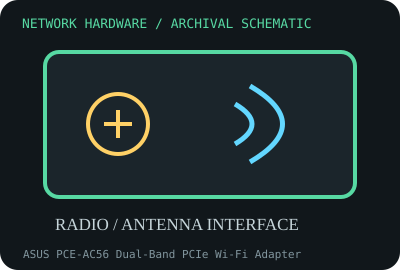

[ MODEL-SPECIFIC NETWORK HARDWARE RECORD ]
ASUS PCE-AC56 Dual-Band PCIe Wi-Fi Adapter
PCIe x1 dual-band 3x3 802.11ac adapter with external antennas and a remote antenna base. This record identifies the stated model/revision; visually similar products may use different silicon or firmware.

IDENTIFICATION: Verify the full label, board revision, vendor/device IDs and regulatory markings before selecting firmware or drivers. Nominal PHY/link rates below are not measured application throughput.
Specifications and compatibility
| Subcategory | Wireless adapters |
|---|---|
| Exact model | ASUS PCE-AC56 Dual-Band PCIe Wi-Fi Adapter |
| Interface and connector | PCIe x1 card; Broadcom BCM4360-family radio, three RP-SMA antenna connectors and supplied external antenna base/cables. |
| Controller / PHY / radio | Dual-band 3x3 802.11ac; advertised class combines up to 867 Mb/s at 5 GHz and 400 Mb/s at 2.4 GHz. Confirm radio and hardware revision on the individual card. |
| Nominal throughput (not a test) | Advertised combined class is 1267 Mb/s across two bands; client does not use both bands as one ordinary link. No measured throughput is claimed. |
| Measured throughput | Not tested by this archive. Placement, antenna orientation, channel width, AP and client spatial-stream count govern actual results. |
| Driver / OS / firmware | ASUS support provides Windows driver packages for listed OS/hardware versions. Broadcom PCIe WLAN Linux support can require a particular driver/firmware; confirm exact subsystem ID and distribution kernel before relying on it. |
| Compatibility | Needs a PCIe x1 slot and appropriate OS driver. Antennas are external; use the supplied base and do not overtighten connectors. Router channel/regulatory settings must match region. |
| Variant warning | PCE-AC56 differs from similarly named USB AC adapters and PCE-AC68; board revision and Broadcom device ID affect driver support. Retail “AC1300” class is a summed marketing rate, not a single band speed. |
Variant and operating notes
PCE-AC56 differs from similarly named USB AC adapters and PCE-AC68; board revision and Broadcom device ID affect driver support. Retail “AC1300” class is a summed marketing rate, not a single band speed.
ASUS support provides Windows driver packages for listed OS/hardware versions. Broadcom PCIe WLAN Linux support can require a particular driver/firmware; confirm exact subsystem ID and distribution kernel before relying on it.
Throughput policy: vendor/standard rates are labeled nominal. This archive includes no measured benchmark for this specimen; do not interpret a link rate or aggregate port capacity as sustained payload performance.
Archival, ESD and preservation notes
Preserve antenna base, cables, bracket and label as part of the set. Disconnect antennas before moving; protect the exposed card in ESD shielding and avoid strain on RP-SMA jacks.
Preserve the exact model/revision, serial/date code, firmware and driver versions, accessories, condition, source provenance, and source-document revision. Never retain access credentials or undocumented secrets in the public catalog.
Manufacturer and standards sources
- ASUS PCE-AC56 product specificationsManufacturer or standards reference; match the complete model/revision before applying specifications.
- ASUS PCE-AC56 support/downloadsManufacturer or standards reference; match the complete model/revision before applying specifications.
- Wi-Fi Alliance technology overviewManufacturer or standards reference; match the complete model/revision before applying specifications.
Source coverage can be family-level; manufacturer documentation for the exact part number and hardware revision takes precedence. Standards describe protocol behavior, not a promise of real-world performance.